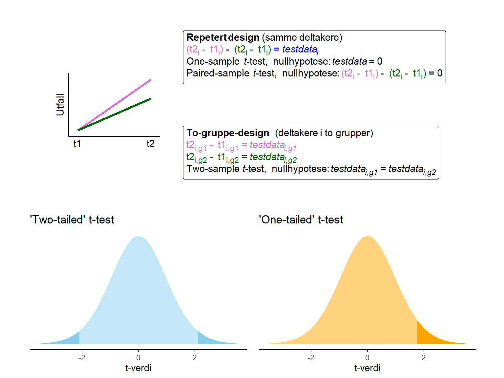
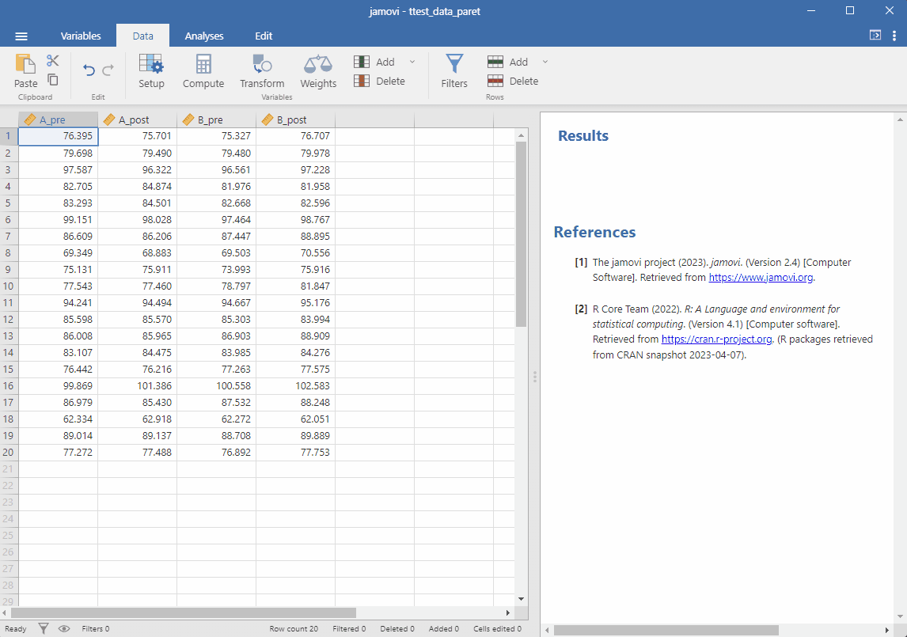
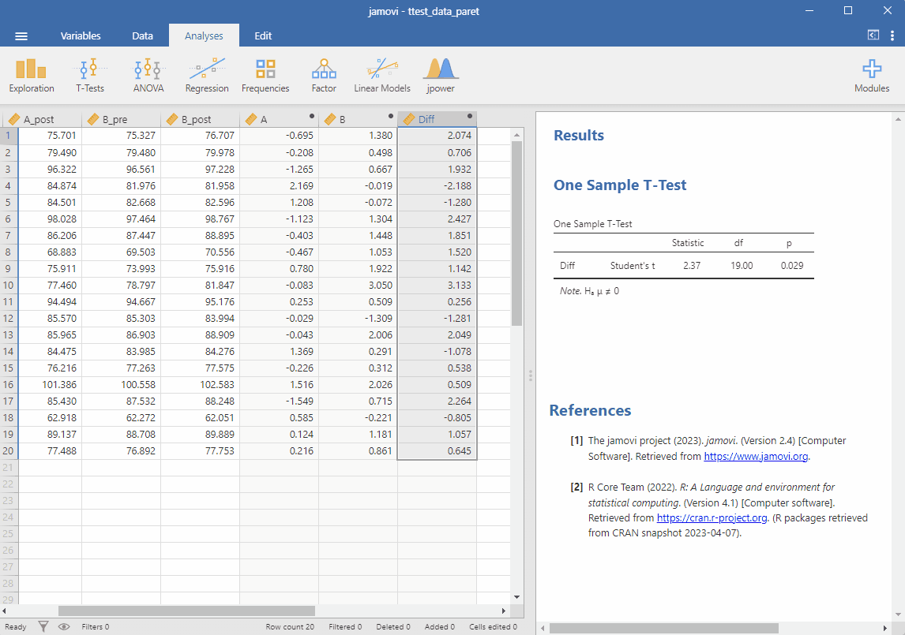
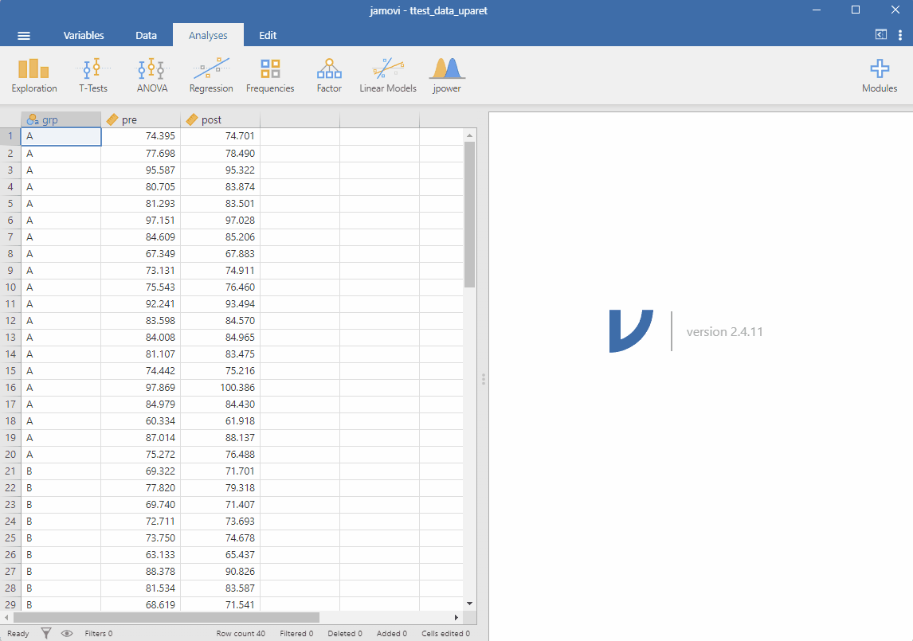
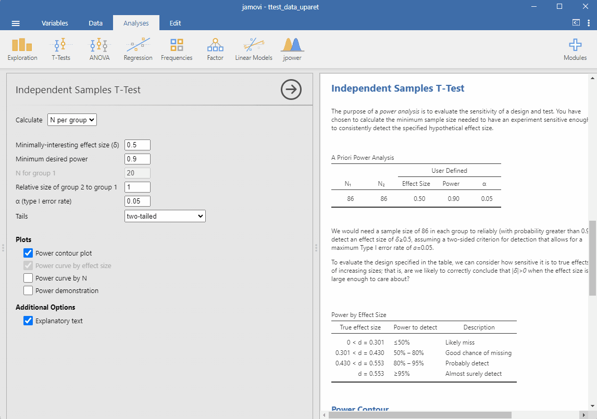

9 Statistisk inferens i Jamovi
Vi kan bruke Jamovi for å teste statistiske hypoteser. Hypotesene testes typisk i noen av de modellene for samvariasjon som vi allerede har sett på Kapittel 3.
9.1 T-tester
9.1.1 One-sample t-test
I en one-sample t-test er nullhypotesen at dine observerte data kommer fra en populasjon som har et spesifisert gjennomsnitt. Gjennomsnittet for nullhypotesen som du spesifiserer vil fungere som en referanseverdi for testen. I Jamovi setter vi inn referanseverdien under Hypothesis og Test Value.
Vi kan bruke en one-sample t-test i forskjellige studiedesigner. For eksempel kan vi ha informasjon om hva et gjennomsnitt er i en populasjon, og vi tester mot nullhypotesen at våre data kommer fra denne populasjonen. I et annet scenario kan vi bestemme oss for at referanseverdien er 0 og vi skaper datasettet ved å beregne differensen mellom to forhold i den samme gruppen. Et eksempel på dette kan vi se i Figur 9.1 hvor de samme individene har gjennomført testing under to forskjellige forhold. Du finner et eksempel på et slik datasett her. Vi tester nullhypotesen at differansen mellom forandringskår i hvert forhold er 0. Med forandringskår mener vi forskjellen mellom de to testpunktene (pre og post i dataene) under hvert forhold (A og B i dataene).
9.1.2 Paret t-test
Med data som er samlet inn som beskrevet over kan vi også bruke en Paired Samples T-Test. Isteden for å beregne forskjell mellom to forhold gir vi Jamovi tallene fra hvert forhold. I datasettet må vi fortsatt regne ut en forandringskår i hvert forhold (pre og post i dataene). Her tester vi den samme nullhypotesen som beskrevet over. Nullhypotesen sier det ikke er en forskjell mellom forandringskårene i de to forholdene (Figur 9.1).
9.1.3 Uavhengig t-test
I en Independent Samples T-Test har vi to grupper som sammenlignes. Her er antagelsen at dataene inneholder uavhengige observasjoner, en deltaker kan ikke være i begge forholdene. Vi kan fortsatt teste en nullhypotese som dreier seg om forandringskårer, på den måten kan vi bruke en t-test for å testet “repeterte data”. I datasettet som du finner her finner vi en gruppevariabel. Vi kan teste mot nullhypotesen at forandringskårene er like i de to gruppene.
9.2 One vs. two-tailed tests
I Jamovi velger vi mellom en one-tailed og en two-tailed test. I en two-tailed t-test plasserer vi den kritiske regionen, der hvor vi forkaster nullhypotesen, sånn at 2.5% den teoretiske utvalgsfordelingen finnes utenfor den i hver hale av fordelingen (hvis feilraten for type I feil settes til 5%, se Figur 9.1, “Two-tailed” t-test). Til sammen har vi den samme feilraten (5%) som en “one-tailed” t-test men vi lar testen ta høyde for at forskjellen kan være både negativ og positiv. En one-tailed test innebærer en “rettningshypotese”, vi tenker oss at forskjellen enten kan være positiv eller negativ. Vi plasserer derfor 5% av den teoretiske utvalgsfordelingen i en hale av fordelingen, i den retting vi forventer effekten (se Figur 9.1, “One-tailed” t-test).
Hvis vi har en situasjon hvor forventer en positiv effekt, for eksempel vet vi at styrketrening vil gi økt muskelstyrke, så vil det å bruke en one-tailed test være mindre konservativt sammenlignet med en to-tailed test. T-verdien som beregnes i testen må bli tilstrekkelig stor til å nå den kritiske regionen i den ovre halen av fordelingen, i en one-tailed test er denne regionen 5%, i en two tailed test er den bare 2.5% (igjenn, gitt at vi setter risiko for type 1 feil til 5%).
I Jamovi er denne mekanismen implementert under Hypothesis, noe som indikerer den alternative hypotesen. Under Paired-samples t-test indikeres en two-tailed tests som \(\text{Measure 1}\neq\text{Measure 2}\), mens en one-tailed test indikeres som \(\text{Measure 1}>\text{Measure 2}\) eller \(\text{Measure 1}<\text{Measure 2}\).
9.3 Flere valgmuligheter
I en Jamovi gir t-test-menyen oss flere valgmuligheter. Under Additional statistics kan vi legge til gjennomsnittlig differens med konfidensintervall (mellom forhold, grupper eller fra referanseverdien). Vi kan også beregne effektstørrelsen som Cohen’s d.
Under Assumption check kan vi teste for normalfordeling av residualene, en beregning som gjøres fra en regresjonsmodell tilsvarende T-testen. Denne testen henger sammen med valgmuligheten Q-Q plot som gir en grafisk fremstilling av hvor nærme residualene faller normalfordelingen. Vi kan også, når vi gjennomfører en Independent samples T-Test teste for lik varians mellom gruppene (data varierer like mye fra gjennomsnitt i gruppene), noe som er en forutsetning for den “vanlige” T-testen. Disse “testene” er en type hypotesetest hvor nullhypotesen er at residualene er normalfordelt eller at variansen er like. Når p-verdien i disse testene er lav indikerer dette brudd på antagelsen.
Når vi ikke kan si at vi tror på antaglesen om lik varians mellom gruppene kan vi bruke en Welch’s som er en modifisert versjon av T-testen som tar høyde for ulik varians. I Jamovi kan vi velge Welch’s under Tests for å bruke denne testen. Welch’s T-test er faktisk den foretrukkne testen til tross for at dette ikke er standard i Jamovi. Når vi har lik variasjon i gruppene gir en “vanlig” (Student’s) T-Test de samme resultatene som Welch’s T-test.
Oppgave: T-tester i Jamovi
A: Bruk datasettet for paret data for å beregne en One-sample t-test
B: Bruk datasettet for paret data for å beregne en Two-sample t-test
C: Bruk datasettet for uparet for å beregne en Independent samples T-test
Svar: T-tester i Jamovi
9.3.0.1 Oppgave A
En One sample t-test krever en rekke med tall og en referanseverdi. I datasettet har vi tall fra to tester (pre og post) per forhold (A og B) innhentet for 20 deltakere. Vi må forenkle datasettet til en kolonne med tall fra disse 20 deltakerne. Vi beregner
\[\text{A} = \text{A}_{\text{post}} - \text{B}_{\text{pre}}\] \[\text{B} = \text{B}_{\text{post}} - \text{B}_{\text{pre}}\] \[\text{Diff} = \text{A} - \text{B}\] Nullhypotesen som gis av studiedesignet er at forskjellen mellom A og B er 0. Vi kan teste dette i Jamovi ved å bruke \(\text{Diff}\) som variabel i en One-sample t-test. I illustrasjonen under ser vi hvordan vi kan gjøre dette i Jamovi.

9.3.0.2 Oppgave A
I en paret t-test (Paired Samples T-Test) kan vi teste den samme nullhypotesen som i en One sample T-Test. Men isteden for å beregne differensen mellom to forhold gir vi variablene \(A\) og \(B\) til Jamovi. I illustrasjonen under ser vi hvordan vi kan gjøre dette i Jamovi. Legg merke til at resultater fra begge analyse er de samme!

9.3.1 Oppgave C
Vi bruker samme strategi som i tidligere datasett og forenkler problemet. Vi beregner forandringsskår mellom tidspunkter (pre og post) for hver deltaker i hver gruppe. Vi kan så teste nullhypotesen at forandringsskårene er like i de to gruppene. I illustrasjonen under ser vi hvordan vi kan gjøre dette i Jamovi.

9.4 Statistisk styrke
I Jamovi kan vi beregne statistisk styrke for alle type av T-tester. For å gjøre det trenger vi en ekstra modul som vi finner under Modules i menyen. Trykk på Modules og installer jpower. Når modulen er installert vil du finne den blant dine andre analysemoduler under Analyses.
La oss si at vi ønsker å planlegge en studie hvor den minste effektstørrelsen som er av interesse er 0.3. Designet er lagd sånn at vi sammenligner to uavhengige grupper. Vi ønsker også at studien skal ha en statistisk styrke på 0.8 og en signifikansnivå på 0.05. Dette betyr at vid repeterte studier så ønsker vi å finne effekten, hvis den finnes, i minst 80% av studiene. Samtidig ønsker vi å holde risikoen for å gjøre en type 1 feil til 5%. Hvor mange deltakere trenger vi, i hver gruppe for å oppnå dette? Vi kan bruke Jamovi for å beregne dette.
Vi velger en lempelig statistisk test, legger inn de parameterer som vi spesifisert, og voila! Vi får svaret.

I eksemplet ser vi at 176 deltakere i hver gruppe er nødvendig for å oppnå en statistisk styrke på 0.8 gitt en effektstørrelse på 0.3 og type-1 feilrate på 5%.